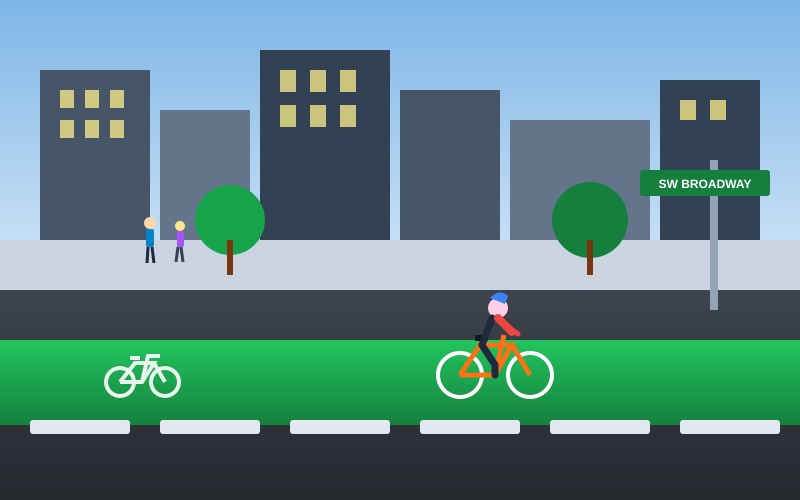
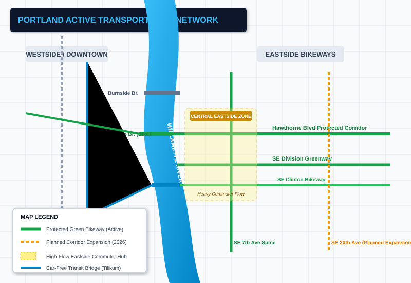

Before PageGuide: Turn on VoiceOver (Cmd + F5 on macOS). Tab or navigate to the images below. Notice VoiceOver announces unhelpful labels: "image", "image", and "chart, image".
Activate PageGuide: Click the PageGuide extension icon or open the Side Panel. PageGuide automatically scans the page and detects 4 images (1 good/decorative, 3 requiring accessibility assistance).
Converse with Image 2 (The Map): Focus or select Image 2. Ask: "Describe this image" or "Tell me more". Then follow up: "What's happening on the east side?" or "Does the route cross the river?".
Converse with Image 3 (The Chart): Focus or select Image 3. Ask: "What does this chart show?" and then "What year was the worst?". PageGuide reads the trend and identifies the 2022 peak!
Screen Reader Augmentation (The Before/After Moment): Click "⚡ Quick Alt" on any image. Re-navigate to that image in VoiceOver. VoiceOver now reads the full, context-aware PageGuide description!
Published: February 2026Division: Capital Infrastructure Projects
Downtown Pedestrian & Protected Bikeway Corridor
The Portland Bureau of Transportation has completed installation of physical concrete-separated bicycle lanes along SW Broadway and Alder Street in downtown Portland. This corridor forms an essential connection for commuters traveling into the city center, separating high-volume vehicle traffic from active micro-mobility users.
Image 1: Missing Alt Text in HTML

SW Broadway protected bicycle facility facing north near Alder Street.
Street-level counters indicate a 34% increase in daily bike and e-scooter trips along SW Broadway since the concrete separators were installed. Pedestrian safety islands and signalized bike crossings have virtually eliminated right-hook conflicts at major downtown intersections.
Eastside vs Westside Cycling Corridors
Active transportation infrastructure differs substantially between Portland's east and west quadrants. The Willamette River acts as a natural geographical divider, bridged by major car-free and multimodal crossing facilities including the Hawthorne Bridge and Tilikum Crossing.
Image 2: Complex Map with Missing Alt

Figure 2: Citywide Active Transportation Network & Eastside Commuter Corridors
The Central Eastside Industrial District continues to represent the highest concentration of bicycle commuter trips in the Pacific Northwest. Greenways along SE Clinton Street and SE Division Street feed thousands of daily riders westward onto the Hawthorne Bridge.
Vision Zero Safety & Incident Trends (2020–2025)
Portland adopted its Vision Zero Action Plan to eliminate traffic fatalities and severe injuries on city streets. The multi-year data tracking system compiles verified collision statistics from the Portland Police Bureau and Oregon Department of Transportation.
Image 3: Poor Alt Text: alt="chart"
Figure 3: Annual reported collision statistics spanning the 2020 to 2025 observation window.
Following an alarming peak in 2022 with 4,850 reported severe incidents, the city deployed automated speed radar cameras across outer arterial corridors. By 2025, annual collisions fell to 2,200—representing a 55% reduction from peak levels.
PBOT's 2026 capital agenda prioritizes completing the Green Loop, expanding automated enforcement corridors into East Portland, and maintaining protected bike facilities through preventative sweeping and asphalt rehabilitation.